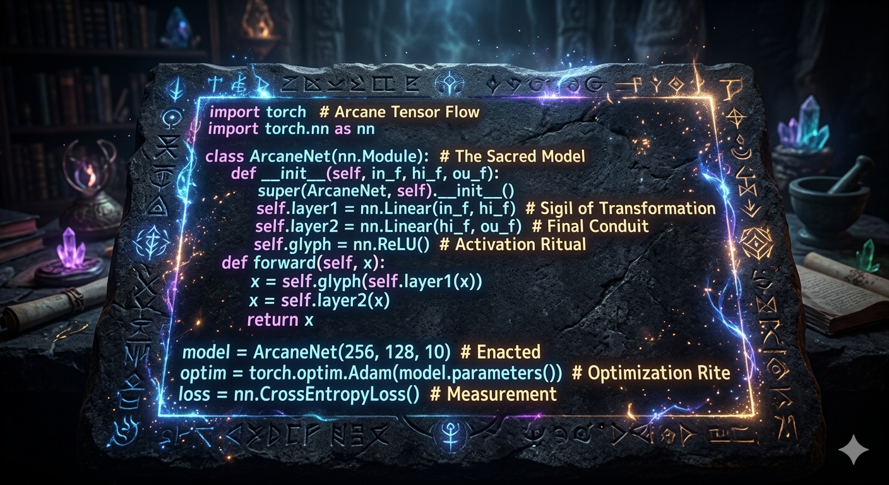

Machine Learning
PyTorch Handwriting Recognition
Working alongside my party of developers (some friends from my cohort), I just finished my first major side project: a handwriting recognition model utilizing the PyTorch framework. This project required us to dive deep into the mathematics of backpropagation and figure out how to manipulate high-dimensional tensors without breaking everything.
Tuning the hyperparameters honestly felt akin to resting at a Site of Grace—carefully spending our computational resources to level up the model's accuracy. We spent hours sanitizing the training data and debugging loss functions, but finally getting the network to decipher messy human script with precision was an incredible feeling.
COMPLETED — PyTorch / MNIST